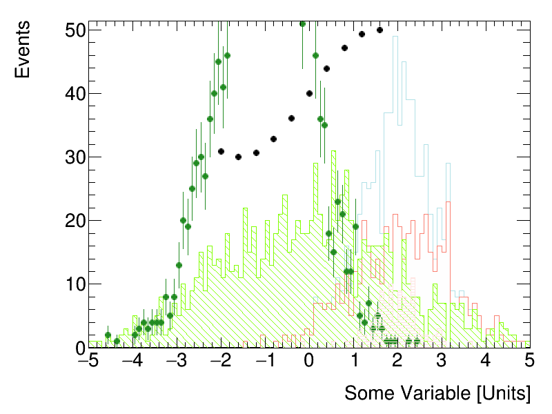

Overlay Histograms or Graphs¶
This example demonstrates how to overlay multiple histograms or graphs while automatically setting axis limits that are visually pleasing.
Python source code: plot_overlay.py
print(__doc__)
from rootpy.plotting import F1, Hist, HistStack, Graph, Canvas, set_style
from rootpy.plotting.utils import draw
from rootpy.interactive import wait
from math import sin
set_style('ATLAS')
mus = (0, -1, 2)
sigmas = (2, 1, 0.5)
events = (1000, 2000, 100)
colors = ('lawngreen', 'forestgreen', 'mistyrose')
styles = ('\\', '/', '-')
canvas = Canvas()
objects = []
# create a stack
stack = HistStack()
stack.Add(Hist(100, -5, 5, color='salmon', drawstyle='hist').FillRandom(
F1('TMath::Gaus(x, 2, 1)'), 500))
stack.Add(Hist(100, -5, 5, color='powderblue', drawstyle='hist').FillRandom(
F1('TMath::Gaus(x, 2, 0.6)'), 300))
objects.append(stack)
# create some random histograms
for i, (mu, sigma, n, c, s) in enumerate(zip(mus, sigmas, events, colors, styles)):
hist = Hist(100, -5, 5, color=c, fillstyle=s, drawstyle='hist' if i % 2 == 0 else '')
hist.FillRandom(F1('TMath::Gaus(x,{0},{1})'.format(mu, sigma)), n)
objects.append(hist)
# create a graph
graph = Graph(10, drawstyle='P')
for i in range(10):
x = -2 + i * 4 / 10.
graph.SetPoint(i, x, 40 + 10 * sin(x))
objects.append(graph)
draw(objects, xtitle='Some Variable [Units]', ytitle='Events', ypadding=0.05)
# see rootpy.plotting.utils.get_limits for details on what arguments are
# supported for setting the axes ranges.
wait()
Total running time of the example: 0.12 seconds